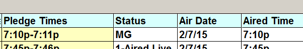

Viewing and Editing Affidavits
To edit affidavits, the user must have green/update access for the Affiliate Affidavits Jobs screen as defined in User Options. A user with yellow/view only access can only view affidavits. (A user with red access cannot access the Affiliate Affidavits screen.)
Viewing/editing affidavits works slightly differently on different versions of the software.
On Older Versions
On older versions of the software (prior to version 7.1), most affidavits can be viewed and edited as follows (the exception is “CP Receipt Only” type agreements, which are described in a later section):
- Click once on the week you wish to view.
- A message appears that reads “All Spots Ran as Pledged”. There are four buttons on this screen: Yes, No, None Aired, and Cancel.
- Yes: all the spots will be posted automatically using the pledged times, and the week will turn to green/Received.
- No: pressing no will bring up the individual spots for the week where they can be viewed or edited.
- None Aired: pressing None Aired will mark all the spots as not aired and the week will be marked as blue/Did Not Air.
- Cancel: close the pop up message without changing anything.
To view or edit the individual spots, press “No”. This brings up a new screen that shows the following information for each spot:
- Vehicle
- Feed Date
- Feed Time
- Advertiser/Product
- Pledge Day
- Pledge Times
- Status
- Air Date
- Aired Time
- Len (Spot Length)
The Status, Air Date, and Aired Time fields can be edited by clicking in them. The other fields (with a yellow background) are read only fields that cannot be edited on this screen.
From this screen you can set the Posting status to Completed, Partially Completed, or Outstanding, then press Done or Save.
Version 7.1 and Above
On version 7.1 and above, when clicking an affidavit week, a popup menu will appear that has different options on it. At the top of the popup are radio buttons labeled “View” and “Post Date/Time”. Select the “View” radio button if you simply wish to view an affidavit without needing to update it, and select the “Post Date/Time” radio button if you need to edit the affidavit in some way.
Different buttons will be enabled depending on which radio button is selected. When the View radio button is selected, the only options available are "View Date/Time Only", which brings up the selected affidavit in view mode (where nothing can be changed, it can only be viewed), and "Return to Date selection screen", which closes the popup menu and returns to the main screen. (Note: if a user has yellow/view only access to the Affiliate Affidavits screen, when they click an affidavit week, it bypasses this new popup menu and goes directly to the affidavit spot view, in view only mode.)
When the “Post Date/Time” radio button is selected, in addition to the “View Date/Time Only” button and the “Return to Date” selection screen button (that are also available when the “View” radio button is selected), the user can also select from the following actions:
Post Spots Date/Time: access the affidavit spots in update mode, where changes can be made. (Accessing the spots in this mode works the same way the system worked on earlier versions when pressing “No” on the “All spots ran as pledged” message.)
Post all Spots as Pledged without viewing the spots: mark the affidavit as received and all aired as pledged (green) without bringing up the spots.
Post all spots as none aired without viewing the spots: mark the affidavit as "Did Not Air" (blue) without bringing up the spots.
Unpost Date/Time of all affiliate spots: resets the posting flags from the affiliate spots in the affiliate system only (web spots are unchanged when clicking this).
Creating Makegoods
It is also possible to create makegoods on the spot detail screen. To create a makegood:
- Click in the Air Date field for a spot.
- Change the Air Date to a date outside of the pledge week.
- Press Done or Save (the Posting Status can also be updated at this time if needed).
- When saving, the Status will change to “5 – Not Aired Other” and a makegood will be created for the air date that was entered in the air week.
- Hold the mouse over the Status field to see the makegood date and time in the light yellow mouse over box.
- The makegood can be viewed (if the makegood week has had the final log generated) on the Affiliate Affidavits screen by selecting the week and clicking on it.
- Makegood spots will be shown with “MG” in the status field.
- You can hold the mouse over the Status field of a makegood spot to see the missed date and time.

Note: Once a makegood has been created, the spot that was missed that became a makegood cannot be edited. Only the makegood spot can be edited.